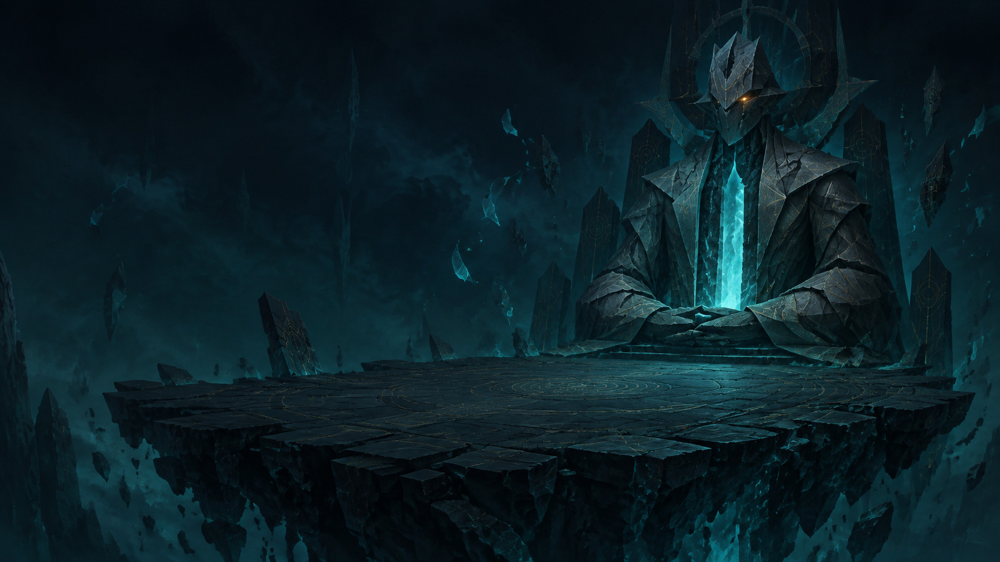

보스는 출구입니다
RULEBREAKER / A SHORT DECKBUILDER
CHAPTER 01TURN 01
현재 세계의 규칙0개 수정됨
01적은공격 대상나를 공격한다
02피해를 받으면피격 효과체력 감소
03카드를 내면카드 사용아무 일 없음
04카드를 버리면카드 반려아무 일 없음
규칙을 믿는 자
문지기
“정해진 절차대로 쓰러지십시오.”
특수 수정 없음
30/ 30
턴 종료 후나에게 8 피해
첫 수
아래 주어 바꾸기 카드를 눌러 보세요.
적의 다음 공격 대상이 달라집니다.
「주어 바꾸기」를 내면 적이 자신을 공격합니다. 남은 집중으로 방어하거나 공격하세요.
손에 든 카드 5카드 클릭 또는 1–9 · 턴 종료 Space옆으로 넘겨 보기 →
지금 턴을 마치면내 체력 −8 · 적 −0
남은 카드는 버리고 5장을 뽑습니다.
SPACE